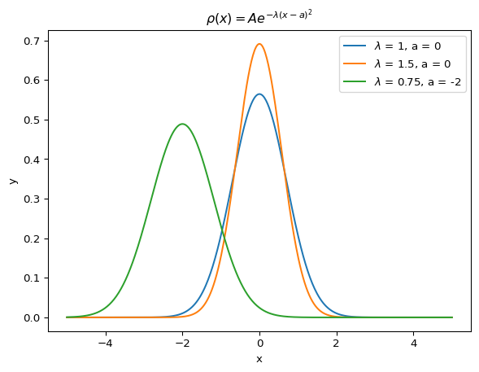

PHYS 481 - Quantum Mechanics
Assignment 01
Problem 1
Consider the three vectors
\[x = \begin{pmatrix} 3 \\ 0 \\ 2\end{pmatrix}, \hspace{1mm} y = \begin{pmatrix} 2 \\ -2 \\ 0\end{pmatrix}, \hspace{1mm} z = \begin{pmatrix} 5 \\ 0 \\ -1\end{pmatrix}\]
- Are \(x\), \(y\), and \(z\) (in the three-dimensional Euclidean space) linearly independent or dependent? Show your work.
- Do \(x\), \(y\), and \(z\) form a basis of the three-dimensional Euclidean space? Why or why not?
Response: For a), we can determine if \(x\), \(y\), and \(z\) are linearly independent by combining them into a matrix and putting them in RREF. If the RREF form is equivalent to the identity matrix, then the vectors are linearly independent because no one vector can be represented at a linear combination of the others. Putting the matrix in RREF will also reveal the span of the vectors by counting the number of pivots; if they are linearly independent, then they will span the a space the size of the number of pivots. This will be useful in answering b).
\[\begin{align} & \begin{bmatrix} 3 & 2 & 5 \\ 0 & -2 & 0 \\ 2 & 0 & -1\end{bmatrix} \overset{R_1 = R_1 - R_3}{\longrightarrow} \\ & \begin{bmatrix} 1 & 2 & 6 \\ 0 & -2 & 0 \\ 2 & 0 & -1\end{bmatrix} \overset{R_1 = R_1 + R_2}{\longrightarrow} \\ & \begin{bmatrix} 1 & 0 & 6 \\ 0 & -2 & 0 \\ 2 & 0 & -1\end{bmatrix} \overset{R_3 = R_3 - 2R_1}{\longrightarrow} \\ & \begin{bmatrix} 1 & 0 & 6 \\ 0 & -2 & 0 \\ 0 & 0 & -13\end{bmatrix} \overset{R_2 = -\frac{1}{2}R_2,\; R_3 = -\frac{1}{13}R_3}{\longrightarrow} \\ & \begin{bmatrix} 1 & 0 & 6 \\ 0 & 1 & 0 \\ 0 & 0 & 1\end{bmatrix} \overset{R_1 = R_1 - 6R_3}{\longrightarrow} \\ & \begin{bmatrix} 1 & 0 & 0 \\ 0 & 1 & 0 \\ 0 & 0 & 1\end{bmatrix}\end{align} = I_3\]
Note that since the RREF is equal to the identity matrix, vectors \(x\), \(y\), and \(z\) are linearly independent. This fact also means that they span the three-dimensional Euclidean space, forming a basis of the entire space, because all vectors in the space can be created by a linear combination of \(x\), \(y\), and \(z\).
Problem 2
Consider the function \(f(x) = 3e^{-(x^2/a^2)}\).
- Sketch a graph of \(f(x)\) vs. \(x\) for \(a=10\). Be sure to indicate and scale the axes.
- Does the function show any symmetries? What is the limit \(x\to\pm\infty\)?
- What is the significance of the parameter \(a\) in the exponent?
Response:
- The code chunk below plots \(f(x)\) for \(a=10\), \(a=20\), and \(a=30\).
The function is symmetric about the \(y\) axis and goes to 0 as \(x\to\pm\infty\).
As we increase \(a\), the width of the curve increases.
Problem 3
The second-order differential equation,
\[\frac{d^2f(x)}{dx^2}=-k^2f(x)\]
has two linearly independent solutions. These can be written in more than one way, and two convenient forms are
\[\begin{align} f(x) &= A \exp(ikx) + B\exp(-ikx) \\ f(x) &= a \sin(kx) + b \cos(kx) \end{align} \]
Verify that both are solutions of the equation (2) above. Since both are equally good solutions, we must be able to determine \(a\) and \(b\) in terms of \(A\) and \(B\); do so.
Response: We can verify both are solutions by taking the second derivative. We can see below that both are valid solutions to the second-order differential equation.
\[\begin{align} f(x) &= A e^{ikx} + B e^{-ikx} \\ f'(x) &= Aik e^{ikx} - Bik e^{-ikx} \\ f''(x) &= -Ak^2 e^{ikx} - Bk^2 e^{-ikx} \\ &= -k^2 \left(A e^{ikx} + B e^{-ikx}\right) \\ &= -k^2 f(x) \\ \\ f(x) &= a\sin(kx) + b\cos(kx) \\ f'(x) &= ak\cos(kx) - bk\sin(kx) \\ f''(x) &= -ak^2\sin(kx) - bk^2\cos(kx) \\ &= -k^2 \left(a\sin(kx) + b\cos(kx) \right) \\&= -k^2 f(x)\end{align}\]
As we can see below, we get the following relationship for \(a\) and \(b\), in terms of \(A\) and \(B\), when we set both functions equal to each other.
\[\begin{align} A e^{ikx} + B e^{-ikx} &= a\sin(kx) + b\cos(kx) \\ A\left[\cos(kx) + i\sin(kx)\right] + B\left[\cos(-kx) + i\sin(-kx)\right] &= a\sin(kx) + b\cos(kx) \\ A\cos(kx) + Ai\sin(kx) + B\cos(kx) - Bi\sin(kx) &= a\sin(kx) + b\cos(kx) \\ (A + B)\cos(kx) + i(A - B)\sin(kx) &= b\cos(kx) + a\sin(kx) \\ \text{So } b &= A+B,\\ a &= i(A - B) \end{align}\]
Problem 4
Let \(\Psi(x,t)\) be a solution of the (one-dimensional) Schrodinger equation
\[i\hbar\frac{\partial}{\partial t}\Psi(x,t) = \left[-\frac{\hbar^2}{2m}\frac{\partial^2}{\partial x^2} + V(x,t)\right]\Psi(x,t)\]
Suppose you add a constant \(V_0\), which is independent of \(x\) and \(t\), to the potential energy term \(V(x,t)\).
- Show that the solution of the new Schrodinger equation is given by \(\Phi(x,t) = \Psi(x,t)\exp(-iV_0t/\hbar\).
- What effect does this time-dependent phase factor have on the probability density \(|\Phi(x,t)|^2\) and the expectation value of the position \(\big<x\big>\)? Explain.
Response: The newly proposed Schrodinger equation is
\[i\hbar\frac{\partial}{\partial t}\Phi(x,t) = \left[-\frac{\hbar^2}{2m}\frac{\partial^2}{\partial x^2} + V(x,t) + V_0\right]\Phi(x,t), \; \Phi(x,t) = \Psi(x,t)e^{-iV_0t/\hbar}\]
Verifying the proposed solution is valid requires us taking time and spatial derivatives.
The time derivative is
\[\frac{\partial \Phi}{\partial t} = \left(e^{-iV_0t\hbar}\right)\left(\Psi\left(\frac{-iV_0}{\hbar}\right) + \frac{\partial \Psi}{\partial t}\right)\]
The second order spatial derivative is
\[\frac{\partial^2\Phi}{\partial x^2} = \left(e^{-iV_0t/\hbar}\right)\frac{\partial^2\Psi}{\partial x^2}\]
Subsituting in these results into the new Schrodinger Equation and simplifying reveals the original Schrodinger Equation, thus, this is a valid solution.
\[\begin{align} i\hbar\frac{\partial}{\partial t}\Phi(x,t) &= \left[-\frac{\hbar^2}{2m}\frac{\partial^2}{\partial x^2} + V(x,t) + V_0\right]\Phi(x,t) \\ i\hbar\left[\left(e^{-iV_0t\hbar}\right)\left(\Psi\left(\frac{-iV_0}{\hbar}\right) + \frac{\partial \Psi}{\partial t}\right)\right] &= -\frac{\hbar^2}{2m}\left(\left(e^{-iV_0t/\hbar}\right)\frac{\partial^2\Psi}{\partial x^2}\right) + \left[V(x,t) + V_0\right]\Psi(x,t)e^{-iV_0t/\hbar} \\ i\hbar\frac{\partial}{\partial t}\Psi(x,t) &= \left[-\frac{\hbar^2}{2m}\frac{\partial^2}{\partial x^2} + V(x,t)\right]\Psi(x,t)\end{align}\]
Additionally, if we look at the probability density, we can see that the time-dependent phase factor has no effect.
\[|\Phi|^2 = |\Phi^* \Phi| = |\Psi|^2 |e^{-iV_0t/\hbar}e^{iV_0t/\hbar}| = |\Psi|^2\]
Similarly, since the expectation value is defined in terms of the probability, we know that the expecation value also remains unchanged by the time-dependent phase factor.
\[\big<x\big> = \int_{-\infty}^{\infty}x |\Phi|^2 dx = \int_{-\infty}^{\infty}x |\Psi|^2 dx\]
Problem 5
Consider the gaussian distribution,
\[\rho(x) = Ae^{-\lambda(x-a)^2}\]
where \(A\), \(a\), and \(\lambda\) are positive real constants.
- Use the Normalization condition to determine \(A\).
- Find \(\big<x\big>\), \(\big<x^2\big>\) and \(\sigma\).
- Sketch the graph of \(\rho(x)\). [Use Mathematica/Python to plot]
Response: If \(\rho(x)\) is a probability distribution, then the area under the curve must add to one and we can normalize as follows
\[\begin{align} 1 &= A\int_{-\infty}^{\infty}e^{-\lambda(x-a)^2} dx\\ &= A \int_{-\infty}^{\infty}e^{-\lambda u^2} du, \quad u = x-a,\; du = 1 \\ &= A\sqrt{\frac{\pi}{\lambda}} \\ \therefore A &= \sqrt{\frac{\lambda}{\pi}}\end{align}\]
Below, we find \(\big<x\big>\), \(\big<x^2\big>\) and \(\sigma\)
\[\begin{align} \big<x\big> &= \sqrt{\frac{\lambda}{\pi}}\int_{-\infty}^{\infty}xe^{-\lambda(x-a)^2} dx \\ &= \sqrt{\frac{\lambda}{\pi}}\int_{-\infty}^{\infty}(u+a)e^{-\lambda u^2} du \\ &= \sqrt{\frac{\lambda}{\pi}}\left(\int_{-\infty}^{\infty}ue^{-\lambda u^2} du + a\int_{-\infty}^{\infty}e^{-\lambda u^2} du \right) \\ &= \sqrt{\frac{\lambda}{\pi}} \left(0 + a\sqrt{\frac{\pi}{\lambda}}\right) \\ &= a \end{align}\]
\[\begin{align} \big<x^2\big> &= \sqrt{\frac{\lambda}{\pi}}\int_{-\infty}^{\infty}x^2e^{-\lambda(x-a)^2} dx \\ &= \sqrt{\frac{\lambda}{\pi}}\int_{-\infty}^{\infty}(u+a)^2e^{-\lambda u^2} du \\ &= \sqrt{\frac{\lambda}{\pi}} \left(\int_{-\infty}^{\infty} u^2 e^{-\lambda u^2}du + 2a\int_{-\infty}^{\infty} ue^{-\lambda u^2}du + a^2\int_{-\infty}^{\infty} e^{-\lambda u^2}du\right) \\ &= \sqrt{\frac{\lambda}{\pi}} \left(\frac{1}{2\lambda}\sqrt{\frac{\pi}{\lambda}} + a^2 \sqrt{\frac{\pi}{\lambda}}\right) \\ &= \frac{1}{2\lambda} + a^2\end{align}\]
\[\begin{align} \sigma &= \sqrt{\big<x^2\big> - \big<x\big>^2} \\ &= \sqrt{\frac{1}{2\lambda} + a^2 - a^2} \\ &= \sqrt{\frac{1}{2\lambda}}\end{align}\]
Below is the plot of \(\rho(x)\) for various \(\lambda\) and \(a\) values.

Problem 6
At time \(t=0\) a particle is represented by the wave function
\[\Psi(x,0) = \cases{A\frac{x}{a} \hspace{1.8cm} 0\leq x\leq a \\ A\frac{(b-x)}{(b-a)} \hspace{1cm} a\leq x\leq b \\ 0 \hspace{2.3cm} otherwise}\]
where \(A\), \(a\), and \(b\) are constants.
- Normalize \(\Psi\) (i.e. Find \(A\) in terms of \(a\) and \(b\))
- Sketch \(\Psi(x,0)\) as a function of \(x\). [Use Mathematica/Python to plot]
- Where is the particle most likely to be found at \(t=0\)?
- What is the probability of finding the particle to the left of \(a\)? Check your result in the limiting cases \(b=a\) and \(b=2a\).
- what is the expectation value of \(x\)?
Response: We can normalize the wavefunction by solving \(\int_{-\infty}^{\infty}|\Psi|^2 dx = 1\), as such below.
\[\begin{align} 1 &= \frac{A^2}{a^2}\int_0^a x^dx + \frac{A^2}{(b-a^2)}\int_a^b (b-x)^2 dx \\ &= \frac{A^2 a + A^2(b-a)}{3} \\ &= \frac{A^2b}{3} \\ \text{So, } A &= \sqrt{\frac{3}{b}}\end{align}\]
Below is a plot of \(\Psi\) for \(a=1\) and \(b=2a\).
Text(0, 0.5, '$\\Psi(x,0)$')As we can see from the plot above, the particle is most likely to be found at the mode of \(a\).
The probability of finding the particle to the left of \(a\) can be calculated as:
\[\begin{align} P(x\leq a) &= \int_0^a |\Psi|^2 dx \\ &= \frac{3}{ba^2}\int_0^a x^2 dx \\ &= \frac{a}{b}\end{align}\]
Checking our solutions with our limiting cases, we can see our answer matches our intuition. Namely if \(b=a\), the wavefunction is only on one point and we get a probability of one. Similarly, if \(b=2a\) we get a probability of one half, which matches our intuition given the symmetry of the wavefunction.
The expectation value of \(x\) is calculated below.
\[\begin{align} \big<x\big> &= \int_{-\infty}^{\infty}x|\Psi|^2dx \\ &= \frac{3}{ba^2}\int_0^a x^3 dx + \frac{3}{b(b-a)^2} \int_a^b x(b-x)^2 dx \\ &= \frac{3a^2}{4b} + \frac{(b-a)(3a + b)}{4b} \\ &= \frac{b+2a}{4}\end{align}\]